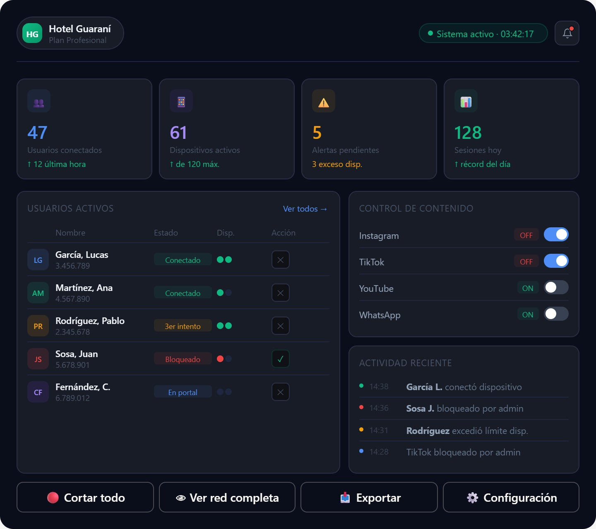
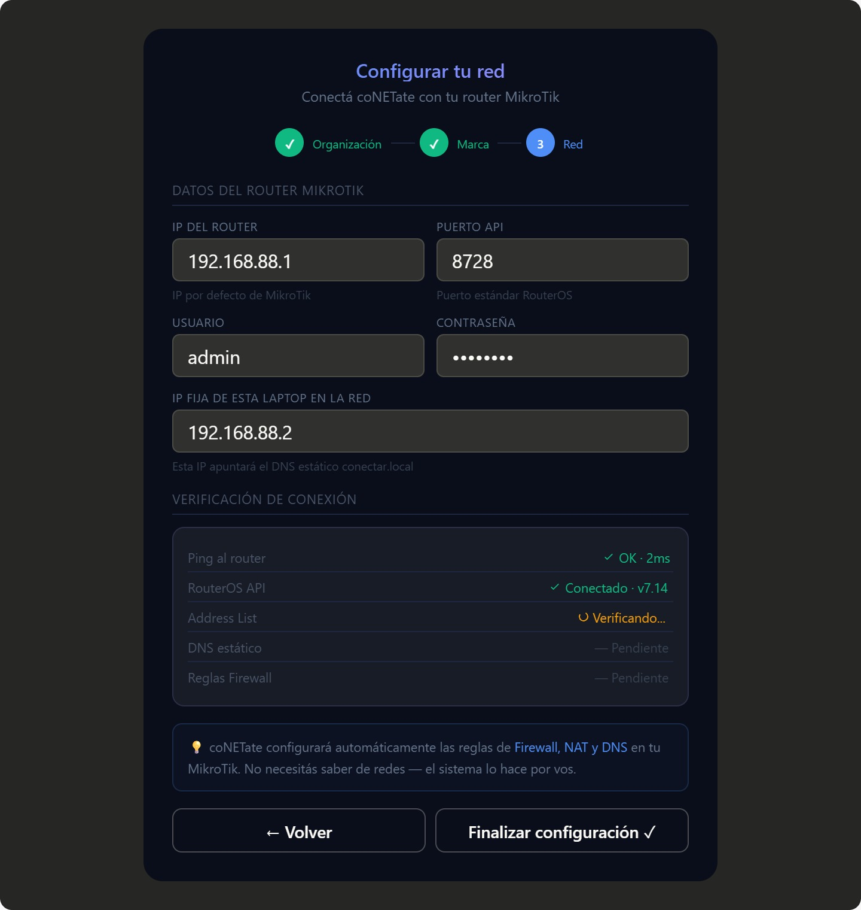

Optimiza el ancho de banda y gestiona dispositivos por usuario con nuestra solución institucional.
Controlamos la distribución de señal para asegurar que cada área tenga la potencia necesaria.
Filtramos accesos y bloqueamos aplicaciones de alto consumo para proteger tu ancho de banda.
Vinculamos el acceso al sistema con la base de datos de tu institución para mayor control.
Visualiza el estado de tu red en tiempo real, gestiona usuarios activos y configura filtros de contenido con un solo clic.


Nuestro sistema mejora la seguridad, el rendimiento y la organización del acceso a internet institucional.
Somos una empresa pionera apasionado por la tecnología y la conectividad. Creamos soluciones que ayudan a instituciones a gestionar sus redes Wi-Fi de manera sencilla, segura y eficiente. Nuestro sistema permite tener el control total del acceso a internet, organizar los dispositivos conectados y mejorar la calidad del servicio para todos los usuarios. Trabajamos con el objetivo de hacer que la conectividad sea más ordenada, accesible y confiable.
Nuestro equipo está disponible para brindar asistencia ante cualquier inconveniente relacionado con el sistema. Ofrecemos acompañamiento en la configuración y resolución de problemas.